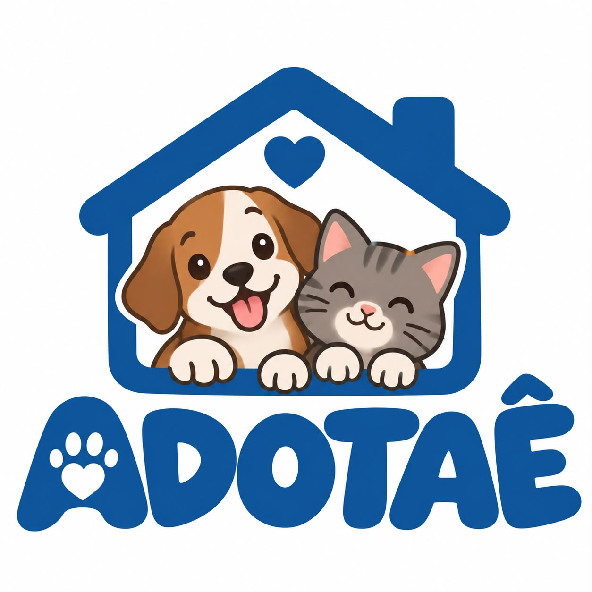

Castração gratuita
Encontre campanhas, programas públicos e serviços gratuitos. Confirme critérios, documentação e agendamento diretamente com o local.
Buscar no mapa
AdotaêBusque clínicas veterinárias, hospitais, serviços de castração e organizações de proteção animal perto de você.
Encontre campanhas, programas públicos e serviços gratuitos. Confirme critérios, documentação e agendamento diretamente com o local.
Buscar no mapaConsulte clínicas veterinárias próximas e entre em contato para confirmar especialidades, valores e horários.
Buscar no mapaEncontre hospitais veterinários e atendimento de urgência. Ligue antes para confirmar disponibilidade.
Buscar no mapaLocalize organizações, abrigos e grupos de proteção que podem orientar ou apoiar resgates.
Buscar no mapaNão espere por respostas na comunidade. Procure atendimento veterinário imediatamente e telefone para confirmar que a unidade pode receber o animal.